Blogs y webs de Tecnología para Secundaria¶
Ranking de blogs y páginas web de Tecnología para Educación Secundaria.
Los ranking de Similarweb corresponden al mes de octubre de 2024.
Para realizar la ordenación de los sitios web se ha tomado como base el ranking de Similarweb. Los números más pequeños se colocan primeros en la lista.
01. Área Tecnología¶
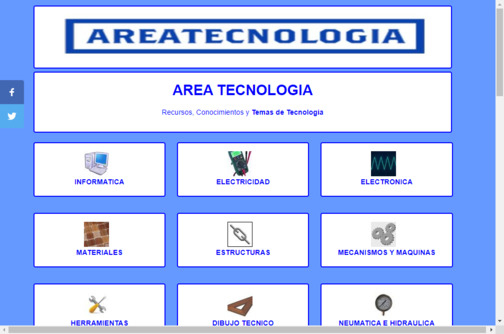
Similarweb rank 139.9 k Visitas al mes 492 k
02. Picuino¶
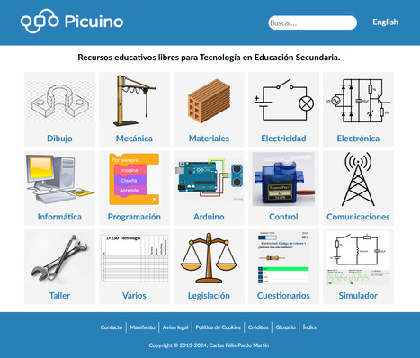
Similarweb rank 487.6 k Visitas al mes 58 k Web creada por Carlos Pardo, profesor de Tecnología.
03. Tecno Villadiego¶
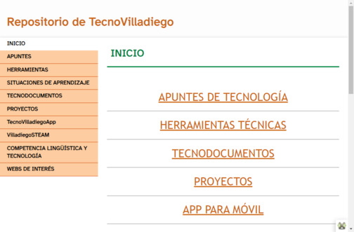
Similarweb rank 803.3 k Visitas al mes 38 k Web creada por Ángel Micelti, profesor de Tecnología del I.E.S. Virgen de Villadiego, de Peñaflor (Sevilla). Con repositorio en GitHub.
04. Portal ESO¶
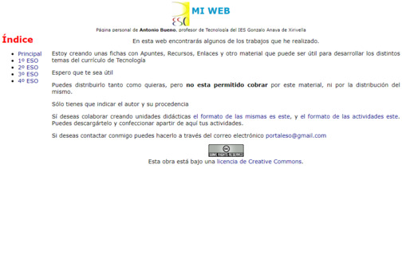
Similarweb rank 928.8 k Visitas al mes 40 k
05. Tecnopatafísica¶
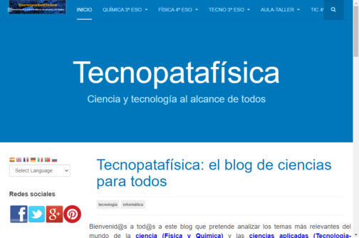
Similarweb rank 950.1 k Visitas al mes 23 k
06. Pelandintecno¶
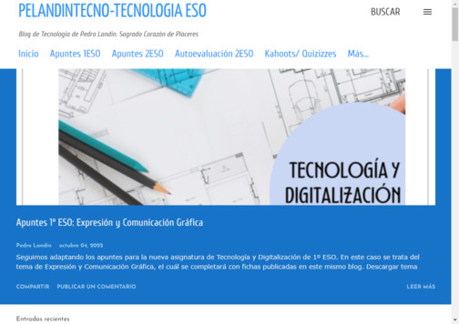
Similarweb rank 1155.3 k Visitas al mes 28 k Web creada por Pedro Landín, del departamento de Tecnología del Sagrado Corazón de Placeres.
07. Makinando Vélez¶
Similarweb rank 1298.3 k Visitas al mes 26 k Blog creado en el departamento de Tecnología del IES Luis Vélez de Guevara, Écija.
08. Tecnoapuntes¶

Similarweb rank 1333.3 k Visitas al mes 27 k
10. Apuntes Marea Verde¶
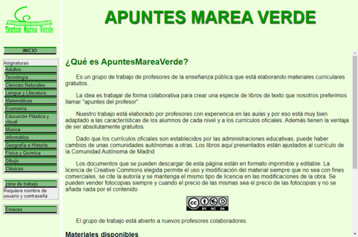
Similarweb rank 491.0 k Visitas al mes 78 k Web del movimiento Marea Verde, con apuntes y libros de muchas materias, incluida la materia de Tecnología.
El ranking de esta web tiene una penalización debido a que tiene mucho tráfico dedicado a otras materias distintas a la Tecnología.
11. Aprendemos Tecnología¶

Similarweb rank 2169.6 k Visitas al mes 12 k Web del IES Villalba Hervás, IES Antonio Glez. Glez. y el IES Tegueste. Creado por nueve docentes de Tecnología en el que desde marzo de 2008 publican apuntes, actividades, proyectos, etc.
12. Tecnosalva¶
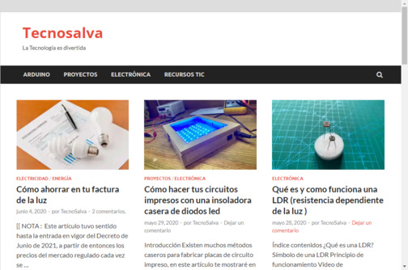
Similarweb rank 2267.3 k Visitas al mes 11 k
13. Tecnosecundaria¶
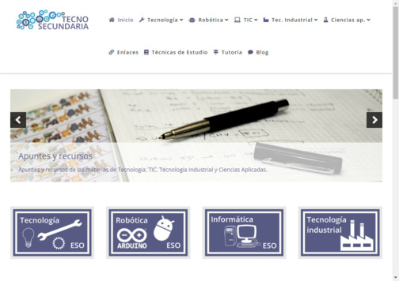
Similarweb rank 2450.3 k Visitas al mes 10 k
14. Blog de José Panadero¶
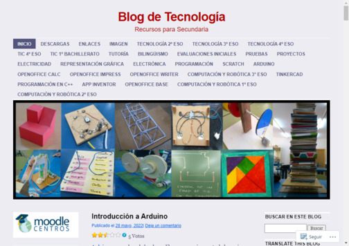
Similarweb rank 3252.6 k Visitas al mes 8 k José Manuel Panadero es el autor de esta página web, que se caracteriza por sus numerosas propuestas para la asignatura de Tecnología.
15. Blog de Alicia Díaz Cobo¶
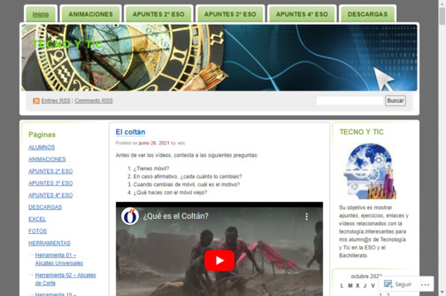
Similarweb rank 3667.2 k Visitas al mes 5 k
16. Tecno Bloc¶
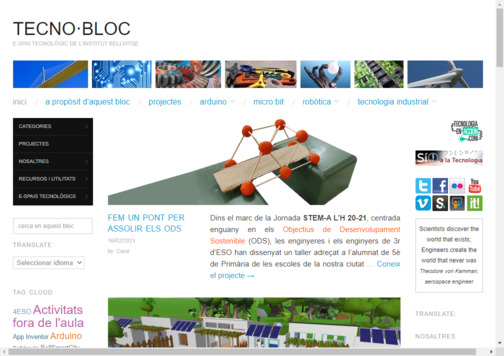
Similarweb rank 4268.8 k Visitas al mes Sin datos.
17. Blog del profesor de Tecnología¶
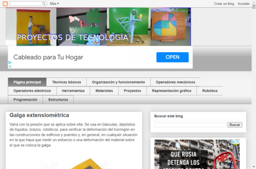
Similarweb rank 4322.1 k Visitas al mes 5 k
18. Raúl Tecnología¶
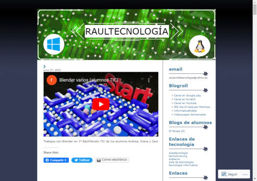
Similarweb rank 4496.6 k Visitas al mes 5 k
19. Aula de Tecnologías¶
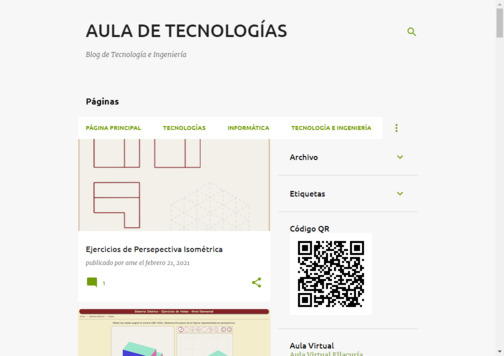
Similarweb rank 5981.3 k Visitas al mes Sin datos. Blog creado por Amelia Tierno (docente de Tecnología en IES Ignacio Ellacuría en Alcalá de Henares).
20. GMedranoTIC¶
Similarweb rank 6729.9 k Visitas al mes Sin datos.
21. TecnoOcho¶
Similarweb rank 7783.2 k Visitas al mes Sin datos.
22. Tecnopujol¶
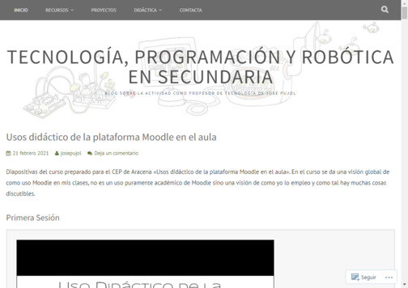
Similarweb rank 7957.9 k Visitas al mes Sin datos.
23. Alextecnoeso¶
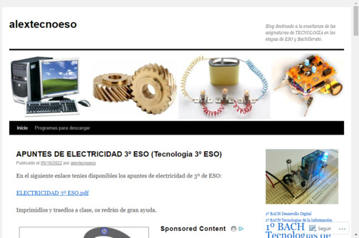
Similarweb rank 8277.5 k Visitas al mes Sin datos.
24. Todotecnología IES el Chaparil¶
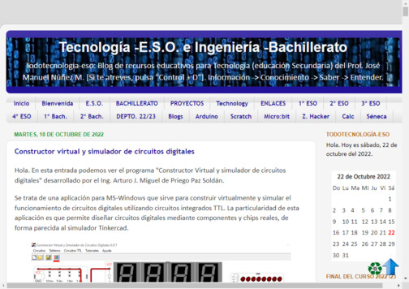
Similarweb rank 9059.6 k Visitas al mes Sin datos. Blog de Tecnología del IES el Chaparil de Nerja.
25. Nueva Tecnología¶
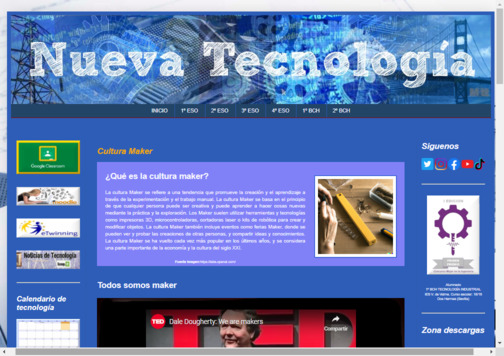
Similarweb rank 9670.0 k Visitas al mes Sin datos.
26. Tecnoloxia.org¶
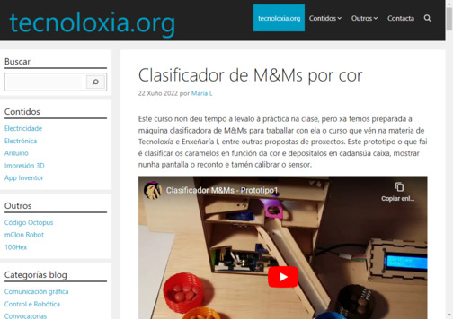
Similarweb rank 13847.4 k Visitas al mes Sin datos.
27. Andeltecnología¶
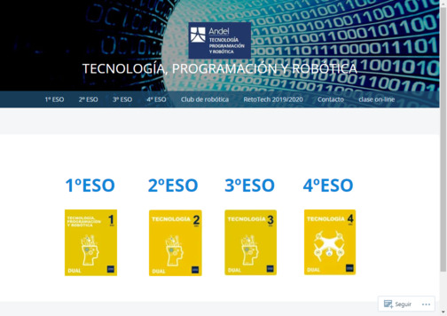
Similarweb rank 14955.2 k Visitas al mes Sin datos.
28. HaroTecno¶
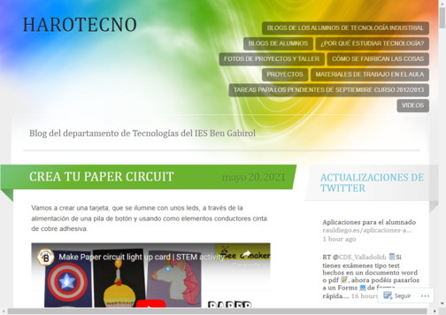
Similarweb rank 15019.9 k Visitas al mes Sin datos.
29. Tecno Atocha¶
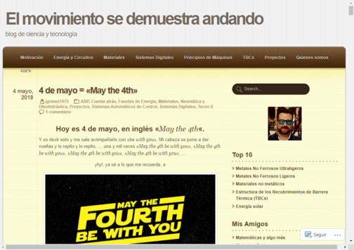
Similarweb rank 16395.7 k Visitas al mes Sin datos.
30. EducarFilando¶
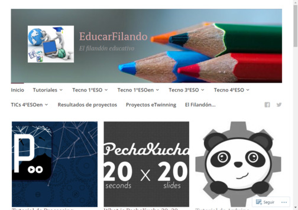
Similarweb rank 18485.2 k Visitas al mes Sin datos.
31. TecnoZona¶
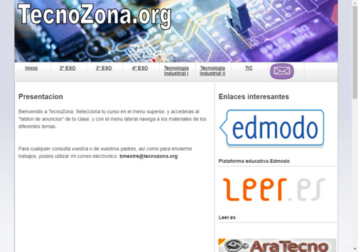
Similarweb rank 19251.5 k Visitas al mes Sin datos.
32. Raúl experimentos¶
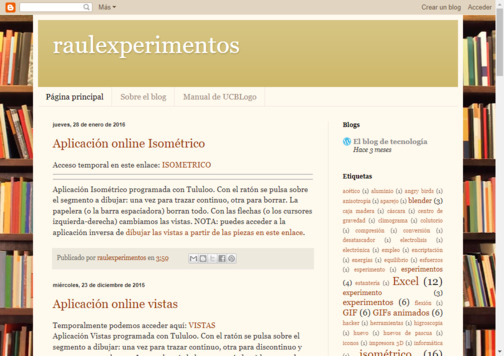
Similarweb rank 19504.9 k Visitas al mes Sin datos. Experimentos sencillos de Ciencia y Tecnología.
33. Tecnomapas¶
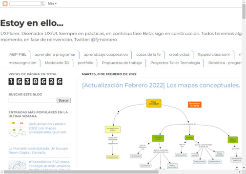
Similarweb rank 20130.3 k Visitas al mes Sin datos.
34. Tecnología en la ESO¶
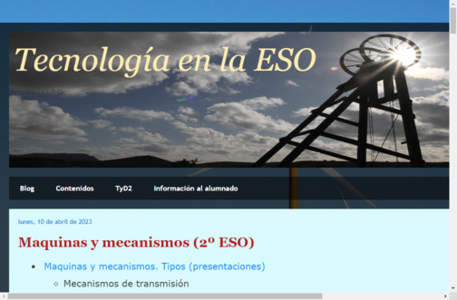
Similarweb rank 21601.0 k Visitas al mes Sin datos.
35. Tecnomeler¶
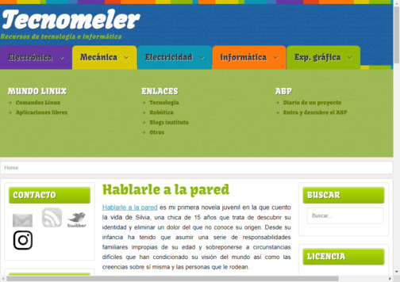
Similarweb rank 23339.3 k Visitas al mes Sin datos.
36. Tecnología María de Molina¶
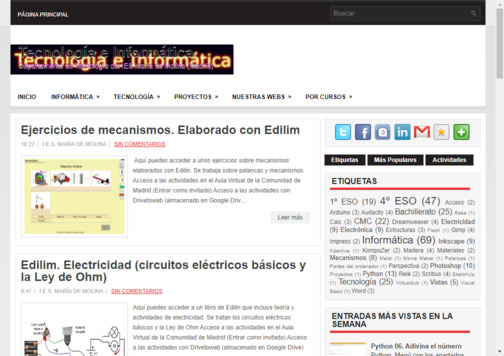
Similarweb rank 23468.5 k Visitas al mes Sin datos.
37. Blog de Pedro Jara¶
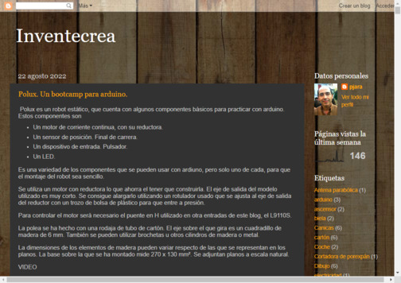
Similarweb rank 25175.6 k Visitas al mes Sin datos.
38. Tecnología IES Palti¶
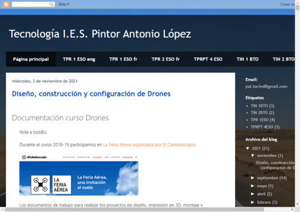
Similarweb rank 26168.0 k Visitas al mes Sin datos.
39. Blog de Francisco Díaz Uceda¶
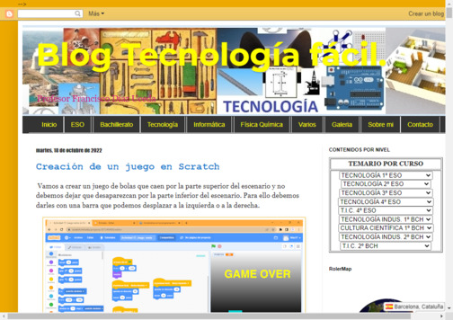
Similarweb rank 26812.8 k Visitas al mes Sin datos.
40. Tecnología Canete¶
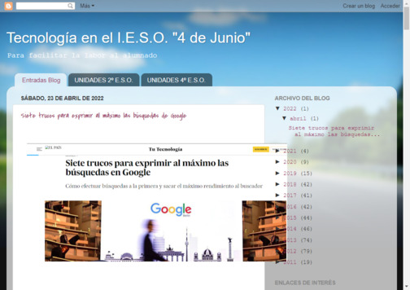
Similarweb rank 30502.6 k Visitas al mes Sin datos.
41. Blog de Tecnología de Carlos Martínez¶
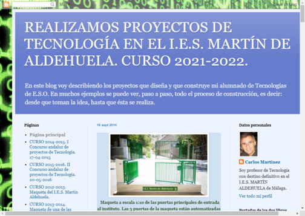
Similarweb rank 32753.1 k Visitas al mes Sin datos.
42. Blogtecnos¶
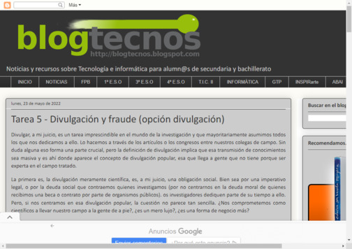
Similarweb rank 33616.0 k Visitas al mes Sin datos.
43. Tecnología CEO Boecillo¶
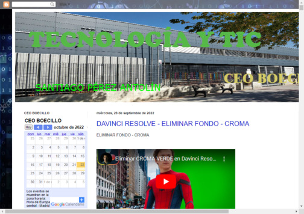
Similarweb rank 35887.1 k Visitas al mes Sin datos.
44. Aula Taller¶
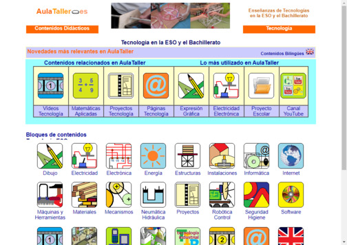
Similarweb rank Sin datos. Visitas al mes Sin datos.
45. Tecnología y más¶
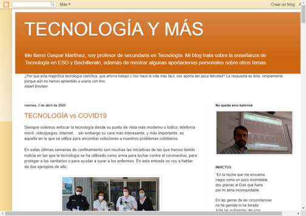
Similarweb rank Sin datos. Visitas al mes Sin datos.
46. Wikilibro Tecno Recursos¶
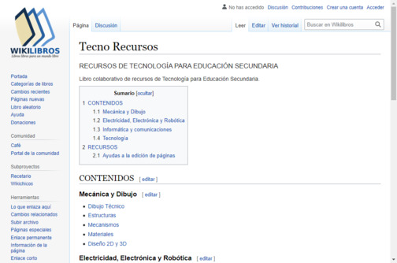
Similarweb rank Sin datos. Visitas al mes Sin datos. Wikilibro colaborativo orientado a crear recursos para Tecnología.
47. Blog Area Tecnología¶
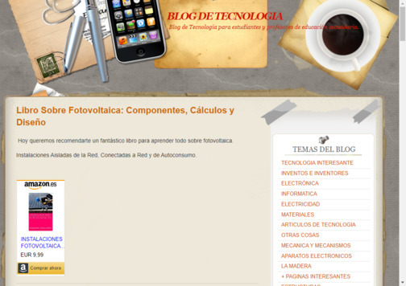
Similarweb rank Sin datos. Visitas al mes Sin datos.
48. TecnoFabri¶
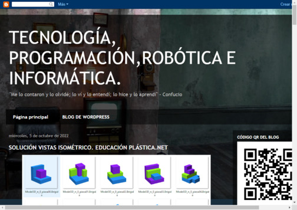
Similarweb rank Sin datos. Visitas al mes Sin datos.
49. Recursos digitales¶
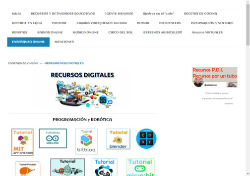
Similarweb rank Sin datos. Visitas al mes Sin datos.
50. Web de Víctor M. Acosta¶
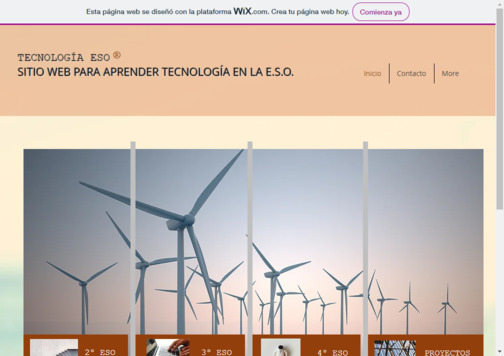
Similarweb rank Sin datos. Visitas al mes Sin datos.
51. JRLopez¶
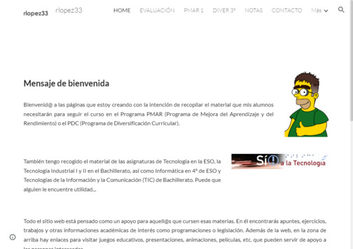
Similarweb rank Sin datos. Visitas al mes Sin datos.
52. Tecnología Escuelas SJ¶
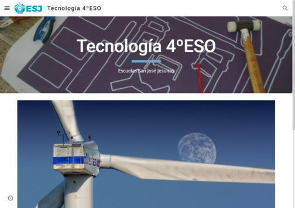
Similarweb rank Sin datos. Visitas al mes Sin datos.
53. Aratecno (Aragón)¶

Similarweb rank Sin datos. Visitas al mes Sin datos.
54. Profesoratecno¶
Similarweb rank Sin datos. Visitas al mes Sin datos.
55. Tecnoeduca¶
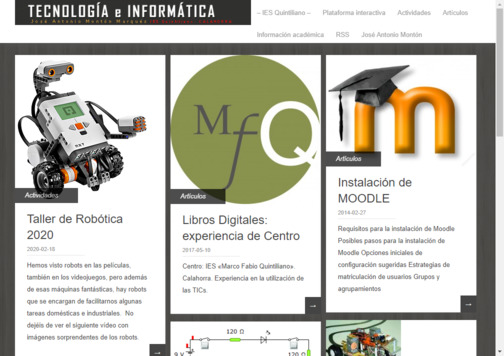
Similarweb rank Sin datos. Visitas al mes Sin datos.
56. Tecnoilógicos¶
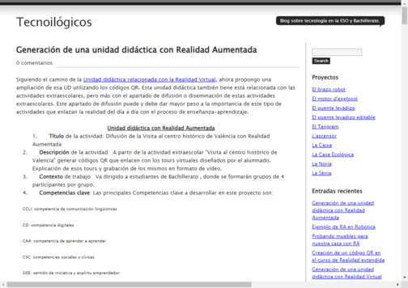
Similarweb rank Sin datos. Visitas al mes Sin datos.
57. Tecnoinfe¶
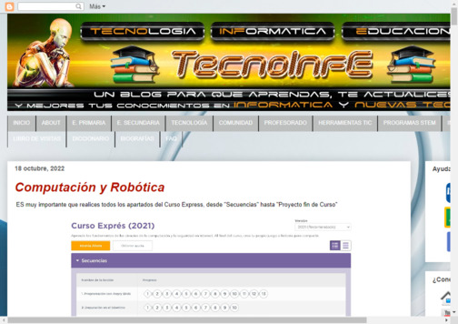
Similarweb rank Sin datos. Visitas al mes Sin datos.
58. Tecnología Vigán¶
Similarweb rank Sin datos. Visitas al mes Sin datos.
59. Tecnología Ayala¶
Similarweb rank Sin datos. Visitas al mes Sin datos.
60. Blog de Programación y Robótica¶
Similarweb rank Sin datos. Visitas al mes Sin datos.
61. Miguel Tecnología¶
Similarweb rank Sin datos. Visitas al mes Sin datos.
62. Crea TEC con TIC¶
Similarweb rank Sin datos. Visitas al mes Sin datos.
63. IES El Cabanyal (1º ESO)¶
Similarweb rank Sin datos. Visitas al mes Sin datos.
64. IES El Cabanyal (2º ESO)¶
Similarweb rank Sin datos. Visitas al mes Sin datos.
65. IES El Cabanyal (3º ESO)¶
Similarweb rank Sin datos. Visitas al mes Sin datos.
66. IES El Cabanyal (4º ESO)¶
Similarweb rank Sin datos. Visitas al mes Sin datos.
67. Ciencia y Tecnología¶
Similarweb rank Sin datos. Visitas al mes Sin datos. Web creada por G. Ibán de la Horra, disponible en inglés y castellano.
68. La Tecnología en el Villadiego¶
Similarweb rank Sin datos. Visitas al mes Sin datos. Blog creado por el departamento de Tecnología del IES Virgen de Villadiego de Peñaflor en Sevilla.
69. MecanESO¶
Similarweb rank Sin datos. Visitas al mes Sin datos. Web con contenidos muy completos de máquinas simples y mecanismos.